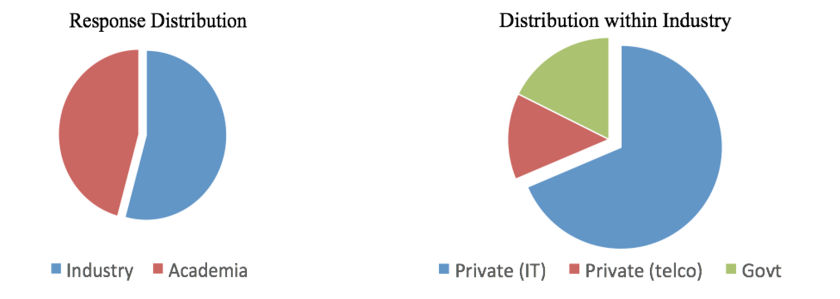
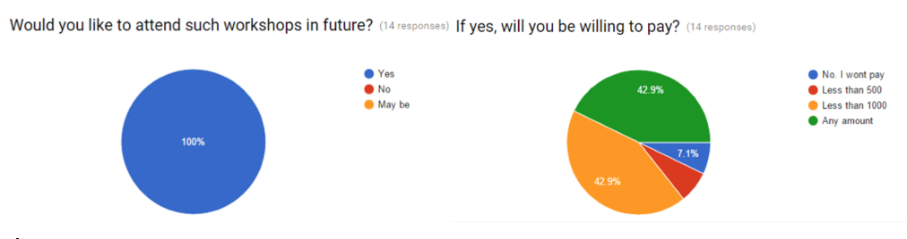

Islamabad: Pakistan Telecommunications Authority (PTA), in collaboration with Ministry of IT and Telecom (MoIT&T ) and PLUMgrid, arranged first hands on workshop on “Cloud Computing Using Openstack”. The objective of this workshop was to hone potential in individuals from industry and academia with necessary knowledge for the deployment of private and public cloud using Openstack. On the occasion of opening ceremony, Chairman PTA Dr. Syed Ismail Shah and Mr. Tahir Mushtaq (Member HR MoIT&T), emphasized the need of such initiatives for facilitating the technical potential of the country. They further said that government (PTA & MoIT&T) is focused on creating awareness on upcoming technologies for creating indigenous potential to benefit national economy.
Openstack Pakistan's first hands-on workshop received an overwhelming response from industry and academia. Over 90 registrations were received within the first 3 days from which 20 participants were shortlisted. The distribution of the applicants is shown below.

Workshop's success was reflected in the feedback collected from the participants, which showed full satisfaction of the participants. Full feedback can be found here.

Openstack Pakistan looks forward to organize bigger and better workshops in the future. In the meanwhile, you can access workshop materials here. We are planning to hold an OpenStack meetup to accomodate all those interested in the workshop to maintain and sustain the eco-system.
Khurrum A. Mehran
Director (PR)
All Rights Reserved. Pakistan Telecommunication Authority 2015